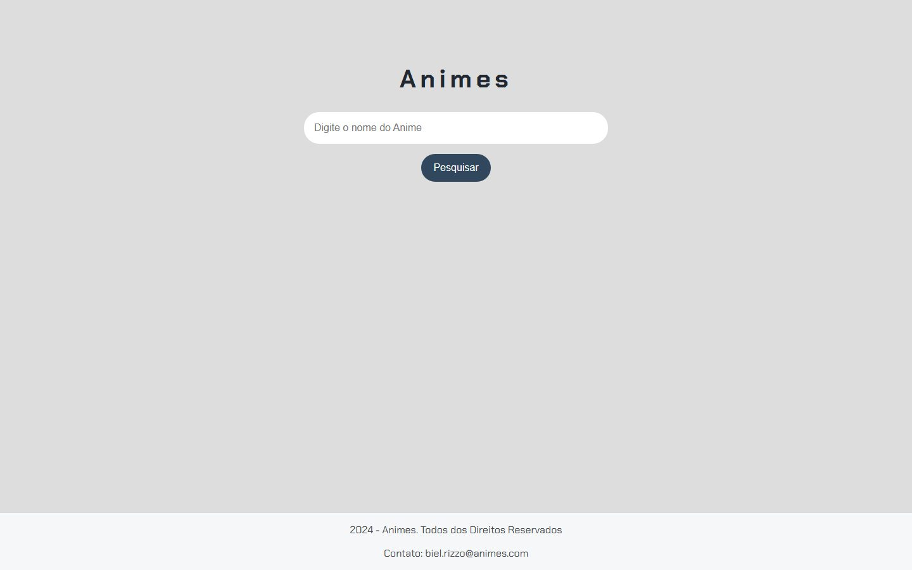
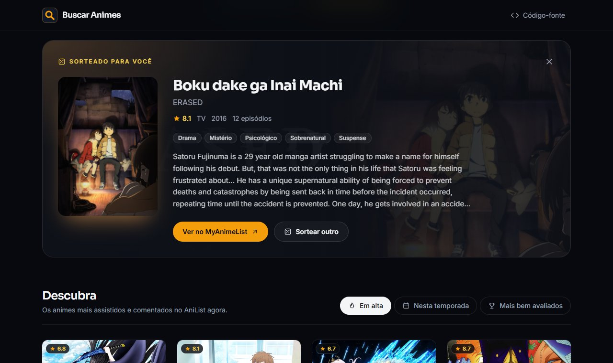
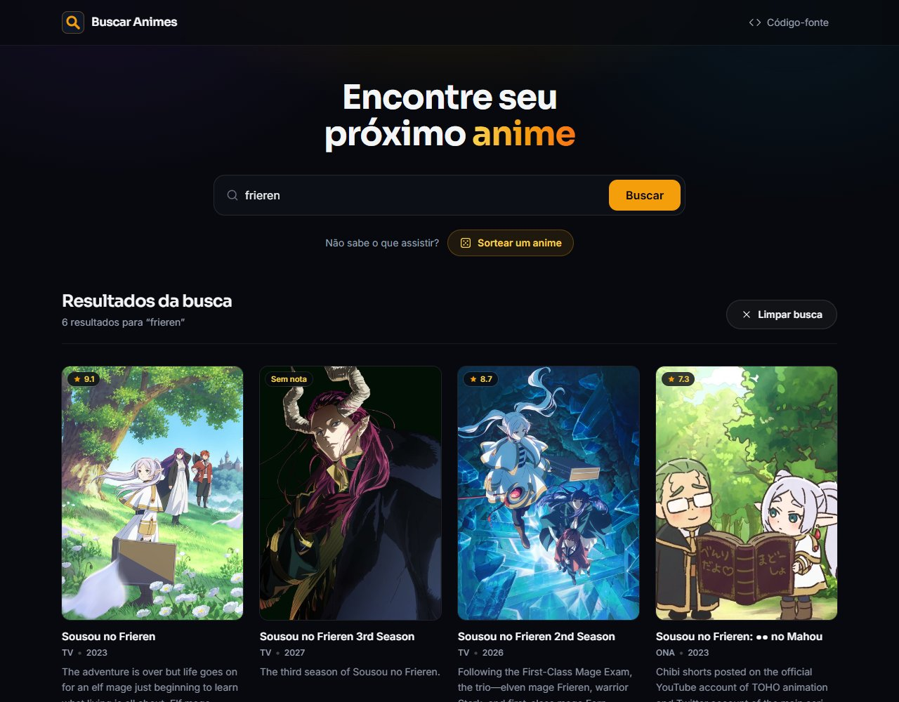
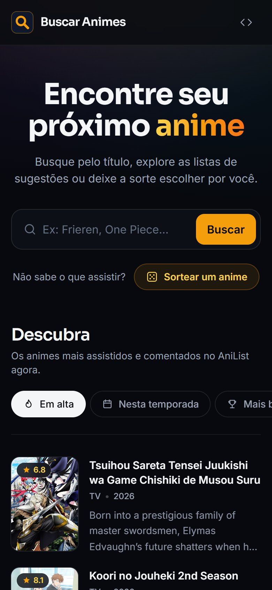
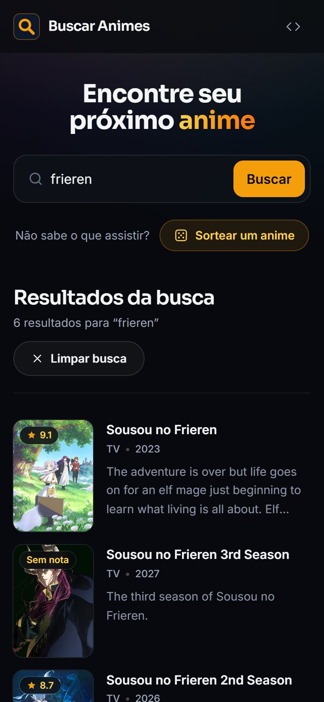

Estudo de caso 01 · Projeto pessoal
Buscar Animes
Uma aplicação para encontrar o próximo anime: busca por nome, listas de sugestões e um sorteio para quando não se sabe o que assistir.
- Meu papel
- Design de interface e desenvolvimento
- Equipe
- Projeto individual, com apoio de IA
- Período
- 2024 — 2026
- Status
- No ar, na Vercel
- Stack
- React 19, TypeScript, Vite 8, Tailwind CSS 4

Contexto e objetivo
O projeto nasceu em 2024 na Imersão Dev Front-End com Google Gemini, da Alura, como um exercício de lógica e manipulação do DOM: a busca acontecia em uma lista fixa de três animes.
Em 2026 retomei o projeto com outro objetivo: transformá-lo em uma aplicação de verdade, com dados de uma API pública, interface responsiva e acessível, código tipado e testes automatizados.
O problema
Uma busca por nome só ajuda quem já sabe o que procura. Para quem quer começar algo novo, a aplicação oferece três caminhos:
- Buscar pelo nome, com o termo guardado na URL para compartilhar a busca.
- Explorar listas prontas: em alta, da temporada atual e mais bem avaliados.
- Sortear um anime entre os mais populares com nota acima de 7.
Meu papel
Projeto individual: interface, código, testes e publicação. Usei ferramentas de IA como apoio em etapas como a auditoria, a migração para React e o redesign (os pull requests estão no repositório), com revisão minha antes de integrar as mudanças.
Design e experiência
Cor que vem das capas
Tema escuro neutro, com o âmbar reservado para ações e destaques. A sombra de cada card usa a cor predominante da capa do anime.
Todos os estados desenhados
Skeleton no carregamento, termo vazio, nenhum resultado e erros específicos: tempo esgotado, limite de requisições (com o tempo de espera), instabilidade e falha de conexão.
Temporada em linguagem local
A lista aparece como "temporada de outubro de 2026", porque outono e primavera se invertem no Brasil.
Um link por card
O card inteiro é clicável, mas leitores de tela ouvem um único link por anime, com nome descritivo.
Acessível por padrão
Landmarks, regiões de status, foco levado ao anime sorteado, navegação completa pelo teclado e respeito ao movimento reduzido.
De 320 px a telas largas
Lista compacta com capa à esquerda no celular e grade de três a quatro colunas de pôsteres nas telas maiores.
Tokens de tema
As cores e as fontes ficam centralizadas como tokens do Tailwind (@theme), em um único arquivo.
canvas
#07090e
Fundo
surface
#0e1118
Superfícies
ink
#f4f5f7
Texto
muted
#9ba3b4
Texto secundário
accent
#f59e0b
Ações e destaques
accent-strong
#f97316
Ênfase
Sora
Títulos
Inter
Texto da interface
Ícones em SVG
Desenhados no próprio projeto, sem biblioteca
Decisões técnicas
| Tecnologia | Uso no projeto |
|---|---|
| React 19 | Interface declarativa em componentes. |
| TypeScript | Tipagem da resposta da API, que tem vários campos que podem ser nulos. |
| Vite 8 | Servidor de desenvolvimento e build de produção. |
| Tailwind CSS 4 | Estilos utilitários e tokens de tema. |
| Vitest + Testing Library | Testes de unidade, de hook e de componentes, com a API simulada (sem depender da internet). |
| GitHub Actions | Lint, formatação, testes e build a cada push e pull request. |
| Vercel | Hospedagem. |
- Sem bibliotecas de roteamento, estado global ou GraphQL. É uma tela com poucas consultas fixas, então
useReducerefetchresolvem. - Um hook para todas as listas. Busca e sugestões usam o mesmo
useAnimeList; cada lista guarda o próprio estado, e limpar a busca não refaz requisições. - A última requisição vence. Cada requisição tem um
AbortController; respostas atrasadas são descartadas. - Sorteio com uma única requisição. Com um anime por página, sortear a página (de 1 a 1.000) é sortear o anime.
- Dados validados na entrada. Só imagens
https, cores no formato#rrggbbe links do MyAnimeList ou do AniList; a sinopse vira texto puro. - Timeout próprio de 10 s, combinado com o cancelamento sem depender de
AbortSignal.any, que não existe no Safari anterior ao 17.4.
Evolução

Set. 2024
Exercício da imersão
Busca em uma lista fixa de três animes, em HTML, CSS e JavaScript.
Out. 2026
Versão atual
React, TypeScript e Tailwind, com dados do AniList, listas e sorteio.
2024
Imersão da Alura: busca em uma lista fixa de três animes, guardada em
dados.js.2026
Dados da API Jikan (MyAnimeList) e visual escuro com efeito de vidro, ainda em JavaScript puro. Essa versão está na tag
v1-vanilla.Out. 2026
Auditoria corrigiu injeção de HTML, falta de timeout, buscas concorrentes e o resumo da sinopse. A interface foi migrada para React, TypeScript e Tailwind CSS.
Out. 2026
A API pública da Jikan foi descontinuada: a busca passou para a API GraphQL do AniList, junto com um redesign completo.
Out. 2026
Listas de sugestões, sorteio e um visual mais limpo, com as cores vindas das capas.
Protótipos
Protótipo em organização
Os arquivos do Figma deste projeto estão sendo organizados. Quando publicados, aparecem aqui ao lado das telas implementadas, para comparar o desenho com o resultado.
Estado atual
No ar em buscar-animes.vercel.app, com integração contínua rodando lint, verificação de formatação, testes e build. Limitações conhecidas:
- O AniList está limitado a 30 requisições por minuto; ao estourar o limite, a aplicação avisa quanto tempo esperar.
- A API não informa um total confiável de resultados para buscas.
- Títulos em japonês romanizado e sinopses em inglês, sem tradução.
- O sorteio considera apenas os 1.000 animes mais populares com nota acima de 7.
- Ainda não há filtros por formato, gênero ou ordenação.
Próximos passos possíveis: filtros e sorteio por gênero, uma página de detalhes do anime e a opção de títulos em inglês nos cards.
Registros
Telas
Capturas da versão atual, as mesmas publicadas no README do repositório.



